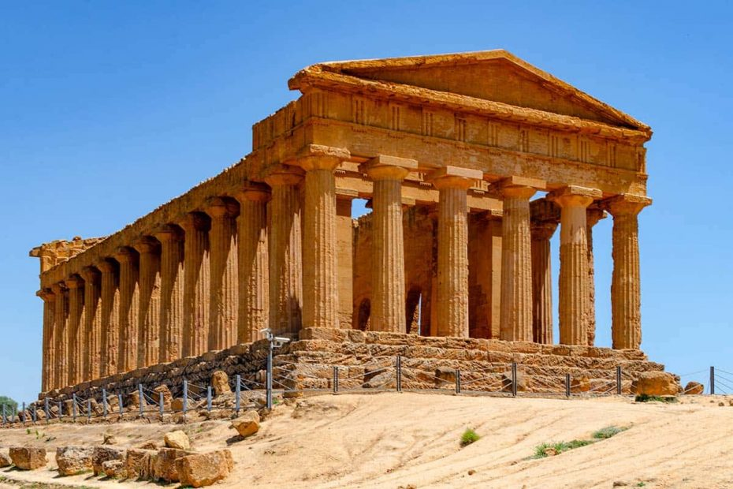
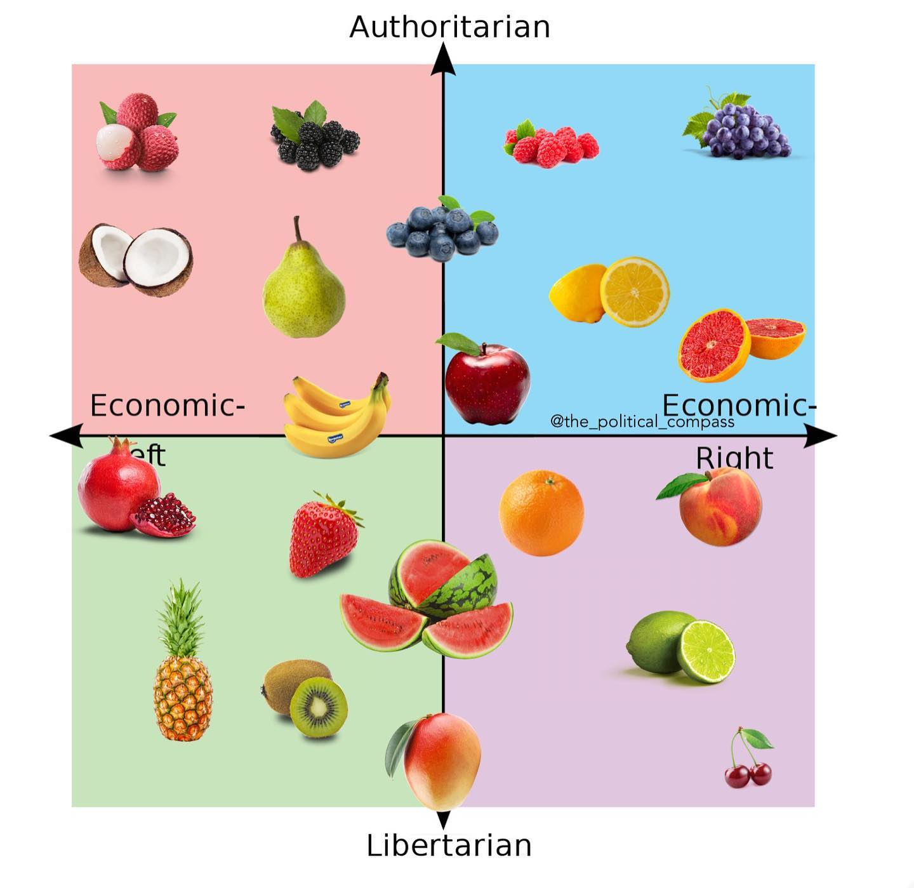
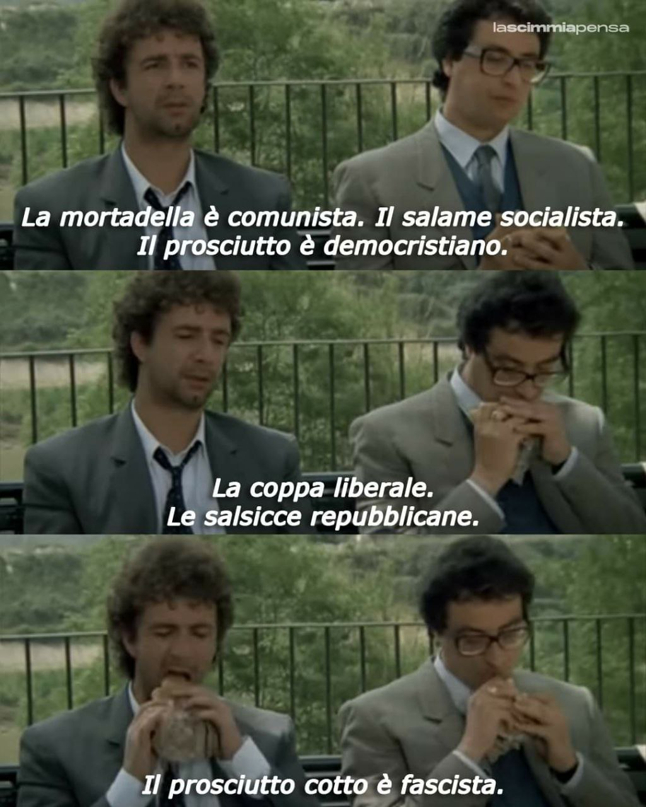

About me
Last updated: January 2025
My life so far
Sicily
I was born on February 25th, 1999, in Agrigento, a small city in Sicily. The very same night, Fabio Fazio interviewed Mikhail Gorbachev at the Festival di Sanremo.

When I was a little boy, I wanted to be a comedian. Since then, I have changed my mind hundreds of times about what I wanted to become as an adult.
I attended the “Empedocle” classical high school in Agrigento, wanting to be a writer or something like that. But I quickly got bored and decided to change my path.
Northern Italy
At the age of 18, I moved to Turin, where I earned a Bachelor’s degree in Mathematics for Engineering with final grade of 110/110 at the Polytechnic of Turin.

But then, I grew tired of doing maths for its own sake. I enrolled in a Master’s degree in Political and Public Communication at the University of Turin, from which I graduated with 110/110 cum laude in 2022.
During the summer of 2022, I worked for a political marketing firm, managing electoral campaigns as a deputy campaign coordinator and junior researcher during the 2022 Italian general elections.
I then enrolled in the PhD program of Analysis of Social and Economic Processes (ASEP) at the University of Milan-Bicocca. During my Ph.D. I have also served as a teaching assistant for Mathematics and Public Policies in the Bachelor’s program in Organization Sciences (UNIMIB).
Low Countries
Since February 2024, I have been living in Antwerp (Belgium), working with the “Media, Movement, and Politics (M2P)”. It started as a research stay, but it ended up becoming my life, and now I’m based in Antwerp until further notice.
From I started a new adventure at the Erasmus Institute on Culture and Stratification within Erasmus University Rotterdam (EUR). I work on a project named “Understanding the different meanings of climate change among the public”. The new challenges that I will face include using qualitative methods, exploring a new research field, and joining a new research community. I really look forward to it!

In my free time, I still love writing and learning languages. I am currently learning Dutch, which helps me a lot given that I live in Flanders and work in the Netherlands.
I also love biking and listening to music of every genre. My all-time favorites? The Cure, Fabrizio De André, and Elio e le Storie Tese. My favorite directors are Paolo Sorrentino and Wes Anderson (but I swear I’m not that kind of hipster). My favorite TV show is probably Scrubs because it remains the only comedy series I still find amusing more than 20 years after its release. I am a huge fan of stand-up comedy.
My (PhD) Research & Me
It all started at the canteen…

During my university years, I often used to go to the university canteen to eat, being both poor and too lazy to cook.
I used to live in Turin (the most beautiful city in the world, in case you didn’t know it). First I studied at the Polytechnic University of Turin (PoliTo), and then at the University of Turin (UniTo).
The two universities are pretty far from each other and have different canteens. Yet, both canteens were handled by the same distributor, so the food provided to one was the same provided to the other. At the same time, every canteen seemed to have a lot of freedom in choosing what they could serve to the students.

I am an omnivore, yet I always kind of suffered from the short list of vegetarian options (and the complete lack of vegan options) that I found at the canteen near the PoliTo. When I started going to UniTo, I noticed that the canteen there ALWAYS had at least one VEGAN option. From Monday to Saturday (it was closed on Sunday) there was always something different, either lentils burgers, tofu, seitan, or something else that was prepared with a certain amount of care.
I started asking myself why.
Stereotypes and Prejudice
I had always perceived the PoliTo as a kind-of-right-wing university. STEM culture in Italy is usually linked to the center and center-right. The reasons can be many, but they may reside in the fact that people who tend to choose these faculties may value as more important the amount of money they will make from their future jobs. We could discuss these reasons another time.

I did not have at the time, and still don’t, any data to prove that PoliTo students are more right-wing than UniTo students. Yet, my perception of them being more right was consistent with the lack of attention that, in the canteen near the PoliTo, was reserved for vegans and vegetarians; a population that, you can believe me on my word, is likely to be considered as more left-wing than most.
- If you don’t believe me, read my paper titled “Food for (Political) Thought”.
At the same time, UniTo was, in my mind, a left-wing stronghold. Especially in the social-science-dominated Campus Einaudi (the most beautiful university campus in the world, in case you didn’t know it), being a leftie was the assumed condition for everyone, and people who were not lefties were spotted and glanced with adversarial intent by most of their colleagues. Again, I do not have any data to confirm that (although one could look at the University elections and see that, while in PoliTO there were no successful extreme-left university parties, in UniTo there were at least - like - three. When I asked myself why the canteens were so different in terms of their menu, I gave myself the following response: “Probably the lefties in UniTo elected a student representative that wanted to push the availability of vegan options in the canteen, to promote environmentally friendly agenda that winked at their left-wing constituency”.
At that time, I was preparing my PhD proposal. One day, I went to my mentor and told him something like:
G: “Ehy! I have an idea about my PhD proposal”
M: “Shoot”
G: “I want to explain why in UniTo everyone is a leftie and in PoliTo everyone is a righty”
-01.jpeg)
##Genesis of a PhD Project
M readily understood that I was going toward a gigantic stream of literature, that would have consumed my life from then on. But I always loved this stuff, and I was ready to go down the rabbit hole. For a year or so, I read papers on the alignment regarding lifestyle and political preferences. Why do lefties prefer hip-hop, modern art, vegan food, and Birkenstocks, and why do righties prefer classical music, old and sacred art, meat, and white shirts?
After a year or so, I was talking with a PhD colleague of mine, who, incidentally, used to be a student representative - responsible for the canteen - at UniTo, and I told her my story about the canteen. And here, she freaking changed my world. She told me that no one among the student representatives ever pushed for the canteen menu to be more vegan.
Now, I do not know if she was fully aware or if she was just assuming, but that completely changed my perspective.
If no student ever pushed for having a more vegan menu at UniTo’s canteen, it meant that it was something that came from inside the canteen itself. Maybe some very vegan person worked there completely by chance and pushed for a more vegan-friendly menu. Or maybe, just maybe, they expected, by virtue of their own stereotypes, that UniTo students would indeed appreciate the Vegan menu more than PoliTo students, and therefore act accordingly.

What a freaking game changer: the knowledge (or even the presumed knowledge) of the political preferences of the student body were translated into assumed lifestyle preferences, and our reality (more precisely, my lunch) was bent according to this perception.
I thought this was enough to choose to dedicate my entire career to this: shedding light of the political inferences from apolitical cues, the apolitical inferences from political cues, and political stereotypes, and political compasses, and political caricatures, their consequences, causes, related aspects, so on and so forth.